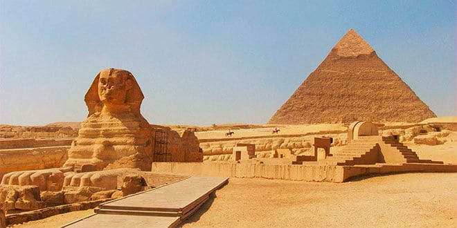
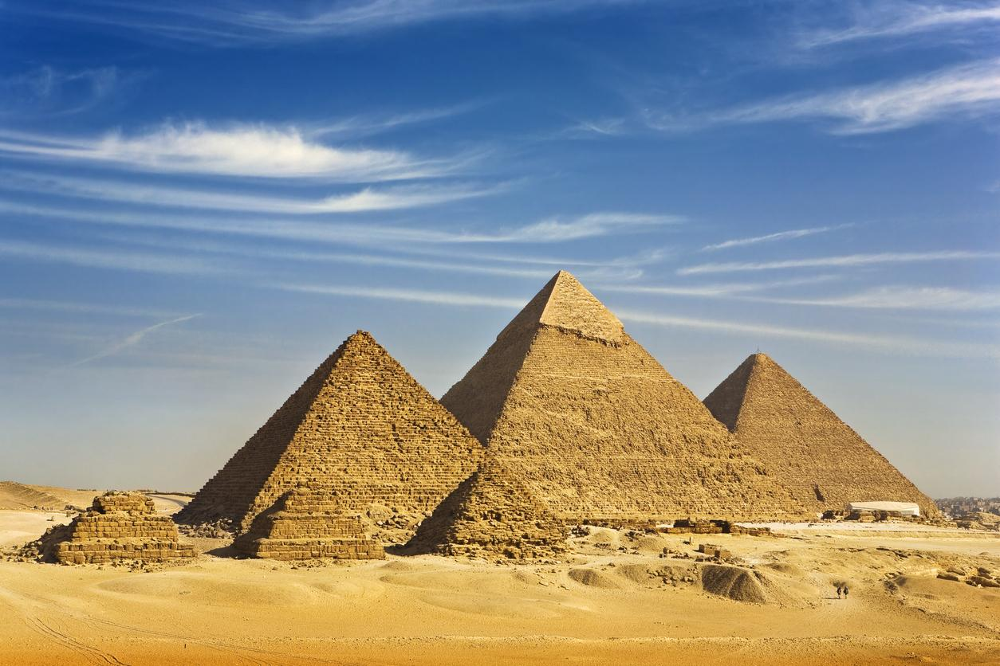

Antiguo Egipto
La riqueza que aportaba el fértil limo tras las inundaciones anuales del río Nilo, junto a la ausencia de poderosos pueblos vecinos por su aislamiento, debido a que el valle del Nilo está situado entre dos amplias zonas desérticas, permitieron el desarrollo de una de las primeras y más deslumbrantes civilizaciones en la historia de la humanidad. Los primeros pobladores de Egipto alcanzaron las riberas del Nilo, por entonces un conglomerado de marismas y foco de paludismo, escapando de la desertización del Sahara. Las primeras comunidades hicieron habitable el país, y se estructuraron en regiones llamadas nomos. Pasado el tiempo y tras épocas de acuerdos y disputas, los nomos se agruparon en dos proto-naciones, denominadas el Alto y el Bajo Egipto alrededor del año 4000 a. C. Egipto se unifica alrededor del año 3100 a. C., desde el faraón Menes (Narmer en su nombre egipcio). La historia del antiguo Egipto se divide en tres imperios con períodos intermedios de conflictos internos y dominación por gobernantes extranjeros. El Imperio Antiguo se caracterizó por el florecimiento de las artes[9] y la construcción de inmensas pirámides.[10] Durante el Imperio Medio (2050-1800 a. C.), tras una etapa de descentralización, Egipto conoció un período de esplendor en su economía. En el Imperio Nuevo (1567-1085 a. C.) la monarquía egipcia alcanzó su edad dorada conquistando a los pueblos vecinos y expandiendo sus dominios bajo la dirección de los faraones de la dinastía XVIII. La última dinastía fue derrocada en el año 343 a. C. por los persas, quienes a su vez fueron sustituidos por gobernantes griegos y romanos, en un periodo que comenzó hacia el año 30 a. C. como resultado de la derrota de Cleopatra y Marco Antonio en la batalla de Actium, que trajo siete siglos de paz relativa y estabilidad económica. Desde mediados del siglo IV, Egipto formó parte del Imperio Oriental, que se convirtió en el Imperio bizantino.
Grupos Etnicos
En Egipto conviven más de 34 grupos étnicos. Los egipcios son en su mayoría descendientes de los antiguos egipcios, la población que se asentó en el noreste de África. Cerca de 4000 jinetes árabes islámicos entraron en Egipto. Los inmigrantes árabes comenzaron a mezclarse con la población local, surgiendo matrimonios entre las comunidades árabe y autóctona. También hay descendientes de otros pueblos invasores, como los romanos, griegos y turcos. Los grupos indígenas nubios viven en el norte de Sudán y el sur de Egipto. Muchos pueblos nubios quedaron inundados por el lago Naser, cerca de Asuán, tras lo cual sus habitantes se trasladaron a Asuán y a El Cairo. El gobierno no los reconoce como una minoría étnica. Hay otras minorías étnicas en Egipto, como los beduinos árabes de la península del Sinaí, del desierto árabe, y la población bereber del oasis de Siwa. Un pequeño número de griegos, italianos, judíos y otras minorías cristianas se mezclan con la población musulmana local. Egipto tiene una población de 500 000 a 3 000 000 de refugiados y solicitantes de asilo. Hay alrededor de 70 000 refugiados palestinos46 y 150 000 refugiados iraquíes.47 El mayor número de refugiados proviene de Sudán, y se estima entre 2 y 5 millones.
Idioma
Si bien Egipto tuvo sus propias lenguas que evolucionaron durante los periodos egipcio antiguo y egipcio antiguo clásico, y posteriormente el copto, estas tres lenguas fueron reemplazadas en este último periodo por su actual idioma oficial, el árabe egipcio, idioma que se ha mantenido como oficial desde la edad media, moderna y contemporánea. La versión egipcia de la lengua árabe (masri) es dominante en el mundo árabe, gracias a la excepcional importancia que Egipto tiene en los medios de comunicación y la educación en este idioma. El árabe egipcio ha adoptado elementos de la lengua egipcia desde tiempos preislámicos, así como del turco, francés e inglés. En la región nubia es hablado el idioma nubio antiguo. La lengua bereber se utiliza en varios asentamientos en los oasis del desierto occidental. Los cristianos coptos utilizan el idioma copto para servir a la liturgia. En las escuelas egipcias se enseña el inglés y el francés.